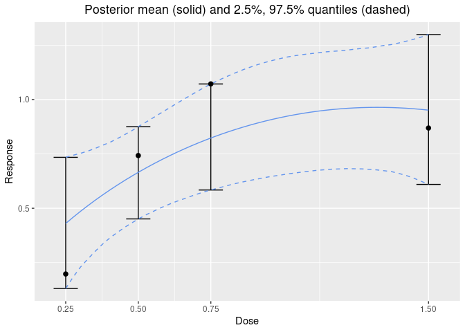
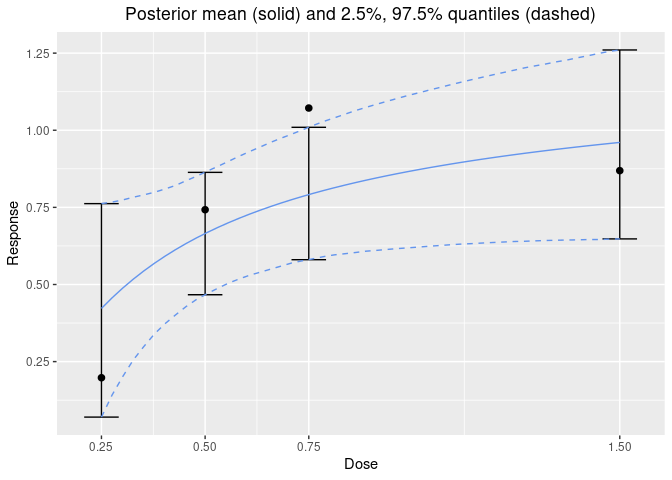

The goal of dreamer (Dose REsponse bAyesian Model avERaging) is to flexibly model (longitudinal) dose-response relationships. This is accomplished using Bayesian model averaging of parametric dose-response models (see Gould (2019), Ando & Tsay (2010)).
dreamer supports a number of dose-response models including linear, quadratic, log-linear, log-quadratic, EMAX, exponential, for use as models that can be included in the model averaging approach. In addition, several longitudinal models are also supported (see the vignette). All of the above models are available for both continuous and binary endpoints.
Installation
dreamer is available on CRAN and can be installed with install.packages("dreamer"). Note that dreamer depends on rjags which itself depends on an installation of JAGS.
The development version of dreamer can be installed directly from github: devtools::install_github("rich-payne/dreamer").
For feature requests and to report bugs, please submit an issue to the dreamer github.
Vignettes
See the “dreamer_method” vignette for a high-level overview of Bayesian model averaging and/or read Gould (2019) for the approach used by dreamer.
For a larger set of examples, see the “dreamer” vignette.
Example
With dreamer, it is easy to generate data, fit models, and visualize model fits.
library(dreamer)
# generate data from a quadratic dose response
set.seed(888)
data <- dreamer_data_quad(
n_cohorts = c(10, 10, 10, 10), # number of subjects in each cohort
dose = c(.25, .5, .75, 1.5), # dose administered to each cohort
b1 = 0,
b2 = 2,
b3 = -1,
sigma = .5 # standard deviation
)
# Bayesian model averaging
output <- dreamer_mcmc(
data = data,
# mcmc information
n_adapt = 1e3,
n_burn = 1e3,
n_iter = 1e4,
n_chains = 2,
silent = TRUE, # make rjags be quiet
# model definitions
mod_linear = model_linear(
mu_b1 = 0,
sigma_b1 = 1,
mu_b2 = 0,
sigma_b2 = 1,
shape = 1,
rate = .001,
w_prior = 1 / 3 # prior probability of the model
),
mod_quad = model_quad(
mu_b1 = 0,
sigma_b1 = 1,
mu_b2 = 0,
sigma_b2 = 1,
mu_b3 = 0,
sigma_b3 = 1,
shape = 1,
rate = .001,
w_prior = 1 / 3
),
mod_emax = model_emax(
mu_b1 = 0,
sigma_b1 = 1,
mu_b2 = 0,
sigma_b2 = 1,
mu_b3 = 0,
sigma_b3 = 1,
mu_b4 = 0,
sigma_b4 = 1,
shape = 1,
rate = .001,
w_prior = 1 / 3
)
)
output
#> -----------------
#> dreamer Model Fit
#> -----------------
#> doses: 0.25, 0.5, 0.75, 1.5
#>
#> | dose| mean| 2.50%| 97.50%|
#> |----:|-----:|-----:|------:|
#> | 0.25| 0.430| 0.131| 0.734|
#> | 0.50| 0.665| 0.451| 0.875|
#> | 0.75| 0.823| 0.584| 1.072|
#> | 1.50| 0.951| 0.610| 1.299|
#>
#> |model | prior weight| posterior weight|
#> |:----------|------------:|----------------:|
#> |mod_linear | 0.333| 0.105|
#> |mod_quad | 0.333| 0.651|
#> |mod_emax | 0.333| 0.244|
# plot Bayesian model averaging fit
plot(output, data = data)
# plot individual model fit
plot(output$mod_emax, data = data)
# posterior summary for model parameters
summary(output)
#> $model_weights
#> # A tibble: 3 × 3
#> model posterior_weight prior_weight
#> <chr> <chr> <chr>
#> 1 mod_quad 65.1% 33.3%
#> 2 mod_emax 24.4% 33.3%
#> 3 mod_linear 10.5% 33.3%
#>
#> $summary
#> # A tibble: 12 × 14
#> model param mean sd se se_ts `2.5%` `25%` `50%` `75%`
#> <chr> <chr> <dbl> <dbl> <dbl> <dbl> <dbl> <dbl> <dbl> <dbl>
#> 1 mod_line… b1 0.405 0.174 1.23e-3 1.23e-3 0.0599 0.291 0.405 0.521
#> 2 mod_line… b2 0.415 0.196 1.39e-3 1.39e-3 0.0309 0.283 0.415 0.544
#> 3 mod_line… sigma 0.600 0.0690 4.88e-4 5.06e-4 0.484 0.551 0.594 0.643
#> 4 mod_quad b1 0.0894 0.258 1.83e-3 1.94e-3 -0.408 -0.0847 0.0866 0.260
#> 5 mod_quad b2 1.47 0.679 4.80e-3 5.20e-3 0.125 1.01 1.48 1.93
#> 6 mod_quad b3 -0.603 0.373 2.64e-3 2.84e-3 -1.33 -0.856 -0.606 -0.353
#> 7 mod_quad sigma 0.568 0.0687 4.86e-4 5.56e-4 0.453 0.520 0.561 0.609
#> 8 mod_emax b1 -0.192 0.567 4.01e-3 1.08e-2 -1.48 -0.516 -0.125 0.196
#> 9 mod_emax b2 1.35 0.438 3.10e-3 6.47e-3 0.694 1.06 1.27 1.57
#> 10 mod_emax b3 -0.691 0.830 5.87e-3 2.18e-2 -2.08 -1.27 -0.796 -0.194
#> 11 mod_emax b4 1.13 0.625 4.42e-3 1.19e-2 0.171 0.666 1.04 1.51
#> 12 mod_emax sigma 0.575 0.0678 4.79e-4 6.65e-4 0.460 0.527 0.569 0.615
#> # … with 4 more variables: `97.5%` <dbl>, gelman_point <dbl>,
#> # gelman_upper <dbl>, effective_size <dbl>
# posterior summary on dose-response curve
posterior(output)
#> $stats
#> # A tibble: 4 × 4
#> dose mean `2.50%` `97.50%`
#> <dbl> <dbl> <dbl> <dbl>
#> 1 0.25 0.430 0.131 0.734
#> 2 0.5 0.665 0.451 0.875
#> 3 0.75 0.823 0.584 1.07
#> 4 1.5 0.951 0.610 1.30Reference
Ando, T., & Tsay, R. (2010). Predictive likelihood for Bayesian model selection and averaging. International Journal of Forecasting, 26(4), 744-763.
Gould, A. Lawrence. “BMA‐Mod: A Bayesian model averaging strategy for determining dose‐response relationships in the presence of model uncertainty.” Biometrical Journal 61.5 (2019): 1141-1159.